Knight armor
From Tarid boat, head West gate and find a hole near water. Go down 2 times and find the chest guarded by Giant spider.
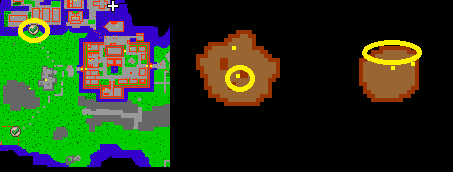
Plate armor & rope
Head West gates and go South-west troll area. Go down to the hole 2 times and you’ll find 2 chests.
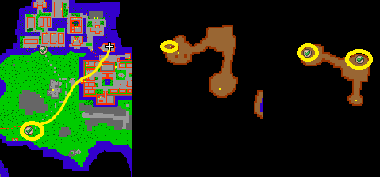
Closed trap
From East wall, go South-east and find some Hunters that are guarding the chest. You’ll need this for Hunter Eragon’s trap quest.
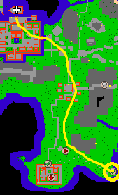
Hunter Eragon’s trap quest
Find Hunter Eragon outside Tarid walls. He has limitless moving access so he might be anywhere.
Boots of haste quest
Head South of Tarid to the black knight village. You’ll see that the gates are closed so you need to open them from underground tunnel. You’ll find it North-east from the gates, go there and South. You need to pull just 1 lever to get past the gates. Head to the black knight village, go South middle house and go stairs down. Claim your reward.
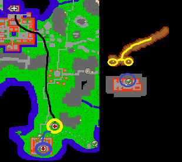
Crystal ring quest
Head East from Tarid and you’ll find some amazons and valkyries. Go down to the hole and head East for the chest that is guarded by witches and valkyries.

Naginata quest
Go East from city of Tarid as far as you find orcs. Go down in to the hole and head to the other side. The chest is protected by all kinds of orcs in the last building upstairs. NOTE: You’ll find also hota piece underground there.
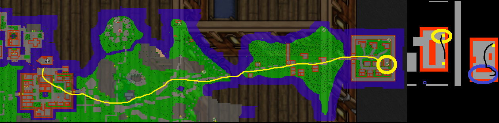
Blue robe & Life crystal
From city of Tarid, head East and go up from the first gulf. Find hidden lever under some trash and go underground. Head East and go down. Eventually you’ll find 2 chests protected by a warlock and few necromancers.
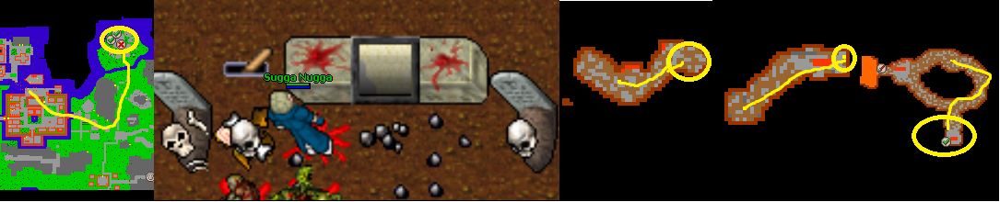
Tarid: Broken helmet of HOTA
Head same way as knight armor quest but go further down. Find your way to the East side of the cave filled with Giant spiders, eventually you’ll find some The Old widows. Kill those, go through and find the chest North of the room.

Tarid: Helmet piece of HOTA
Head to the same way as Naginata quest, but go downstairs. Go past the experience door, switch the lever to get past the magic wall to claim your reward.

Tarid: Helmet ornament of HOTA (with bright sword)
Head same way as Blue robe & life crystal quest and go West from the chests. There’s an NPC looking like a demon skeleton named Ghast. Say Hi, deathland to get to the secret place. Go first stairs down, there’s a bright sword chest. Head more down and East. You’ll eventually find experience door, behind there is warlocks and Necropharus protecting the precious chest.

Making it all come to together: Full helmet of the ancients
As you have collected all the 7 pieces for the Full HOTA head from Tarid’s boat far East. You’ll find a little city beneath the mountain with few Noble warriors. Go North-west of that city and go down to a hole. Go as far down as you can, pull a lever and head to the teleport which leads you to the quest area. Put all the pieces there to finish your quest.


Fire Mushroom
Recommended level: 800
Requirements: Scythe/rune of the almighty abilities
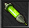Injection tube
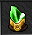Adventurer's stone
From Tarid boat head South and from black knight village go West. Use scythe/rune to cut down the grass and go down to the hole. Head South-East corner and follow the path from there to South always. You’ll face few surphyres and mad cows on your way here. You’ll eventually come across experience door and there you need to sacrifice 2 items: injection tube and adventurer’s stone. From there, go downstairs and head East at the last place. The chest is under protection of King Robert Baratheon and Xapter.
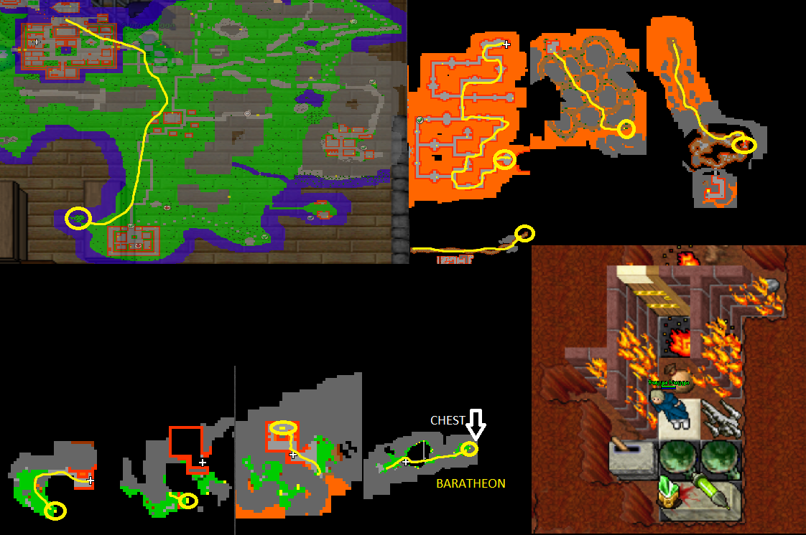
Oceanic lizard weapon & oceanic lizard legs quest
Rewards: Backpack of the gods, oceanic lizard legs (for items exchange), choose weapon from: oceanic lizard wand, - axe, - sword or - club
Recommended level: solo: 1000 or duo 800
Requirements: scythe/rune of almighty abilities
For oceanic lizard legs:
 Illuminati
Illuminati
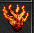Buring heart
 Tear of daraman
Tear of daraman
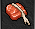Venison
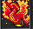Phoenix statue
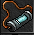Full ectoplasma container
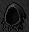Black hood
This quest takes some time if you’re lower level but some higher level players can easily clear it alot faster. If you want to make oceanic lizard legs ques aswell, collect the items listed above before going here.
From city of Tarid, go South and then West from black knight village. Use scythe/rune to cut down the grass to get past them and go down the hole. Follow the path to the South-East corner and follow the road always South. You’ll face some Cyclips, chinese pandas, krampuses and mad cows on the road here. Go through the teleporter with 4 krampuses as you go stairs up with no way back.
As you follow this path, you’ll come across teleports that leads you always to a different rooms. Most of them are easy to understand, some might have some fake teleports. Eventually you’ll come across a checkpoint. In this place you’ll face 2 wizard of visualis with some other mobs that are a little easier.
As you get deeper into the place you’ll find donkey rider. Then you know you’re right next to a backpack of the gods chest. Take it before you go into the second teleport!
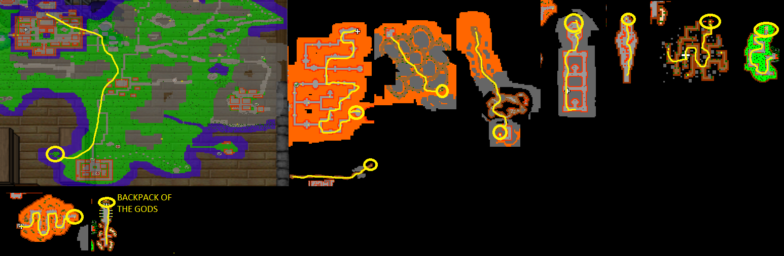
Follow the path as it gets somewhat easier but eventually you’ll come across some cyclips again. At some point, after 3 small rooms like turned U shape, you’ll come to lava place with raptor trolls on lava stands. There’s 1 canopus doradus at first, follow up with surphyres, hybrids, hypergiant and evil limp. Go through different teleports again to get to another room with some bosses like King robert Baratheon, cyclips, wizard of visualis for example.
Eventually you’ll come to a big place with lots of circles on map. This is the last area. Follow the path to the South-East center area. Here you’ll face 2x canopus doraduses 1 by 1 and Xapter. You will also encounter some other bosses on your path to the chests.
Here you can claim your new weapon and make the oceanic lizard legs by sacrificing the items as you can see.
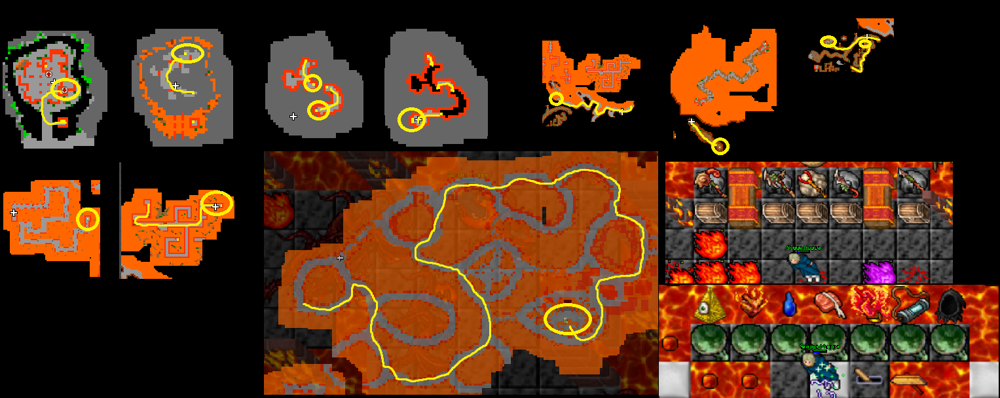